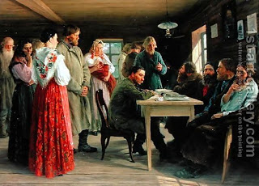

Bava Kamma 72 - When onen steals an ox

If one steals an ox, and to make matters worse, either slaughters or sells it, he must pay back five oxen. If he does the same to a sheep, he pays back four sheep. For the ox he pays more, but not because the ox is more valuable; rather, because while carrying a sheep, he already suffered some humiliation. The ox went by itself.
The Talmud then discusses variations of this law. For example, if he stole and sold an ox on Shabbat, he also pays five oxen. (Slaughter is notably absent, because for slaughtering on Shabbat he is liable to stoning - even if only theoretically - and the rule is that only the more serious of the two penalties applies).
Another variation: if he stole and sold an ox, but we only know about this from two witnesses - and these witnesses are then found false - it is the witnesses who pay five oxen to the owner. Even though no theft has occurred, the witnesses still get punished in the same measure as they plotted to inflict on their fellow.
Yet another variation: if two witnesses told us that he stole an ox, and another two - that he then sold it, and afterwards both pairs are discovered false, who pays what in this case? The answer is that the first two witnesses pay two oxen, because they only created a simple case of stealing, and the punishment for regular stealing is a double payment. The other two witnesses make it a worse case of stealing and then selling, so they pay the balance, three oxen.
Art: Mikhail Ivanovich Zoshchenko - A District Court